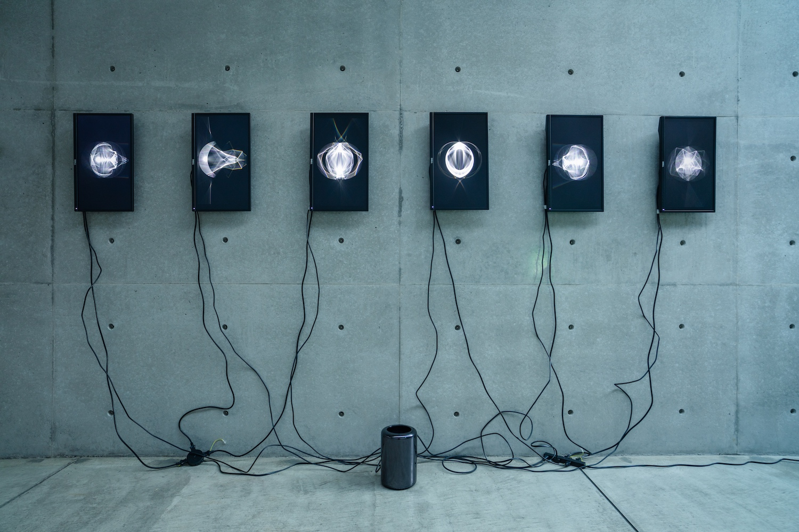
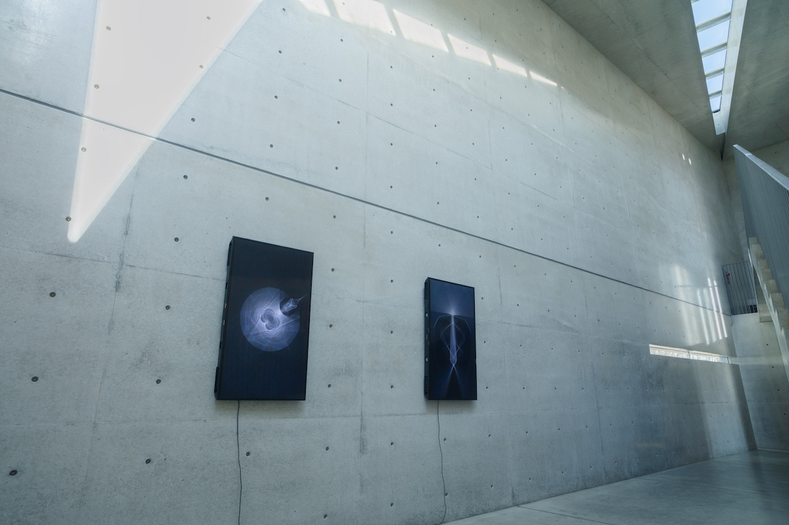
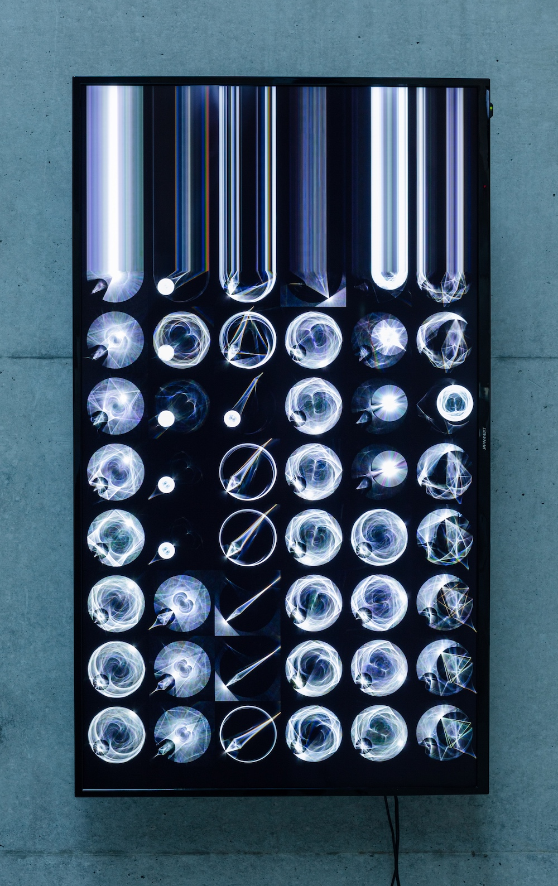

PHOTONS



光は波であると同時に粒子でもある。このことに気がついたアインシュタインは、
光量子仮説を提唱し、ノーベル物理学賞を受賞しました。現在の量子力学では光の粒子は「光子(Photon)」と呼ばれています。
この展覧会では、光子による世界の再解釈をテーマにしました。
安藤忠雄の設計した光の美術館の中で、その空間にあふれる光子の存在に意識的になることで、
空間が空間でなくなり、光が光でなくなるような体験を提供したいと考えました。
ところで、量子力学の世界観と、仏教的な世界観は高い親和性を見せることが近年指摘されています。
チベット・インド仏教の高レベルな瞑想者は、その修行の末に光子を見ることができると言われています。
禅や仏教の修行の目的の一つは量子論的世界を感得することなのかもしれません。
そうだとすれば、物理学の営みと、仏教の営みは、正反対のアプローチから、同じ目的に向かって進んでいるのかもしれません。
もし、仏教的な営みから量子論的世界の本質に至れるのであれば、その反対のアプローチ、
つまり物理学的な営みから禅的な本質に至ることができないかと考えました。
光子の振る舞いをモチーフにした作品を鑑賞することを、
禅的な悟りに至るための第一歩として位置づけても良いのではないかと考えたのです。
CREDIT
Artist : Akira Wakita
Simulation software development : Yuki Mizuno
EXHIBITION
- Photons - Akira Wakita Solo Exhibition, Museum of the Light in Kiyoharu Art Colony, Yamanashi, 2020
TOP
INFO
WORKS